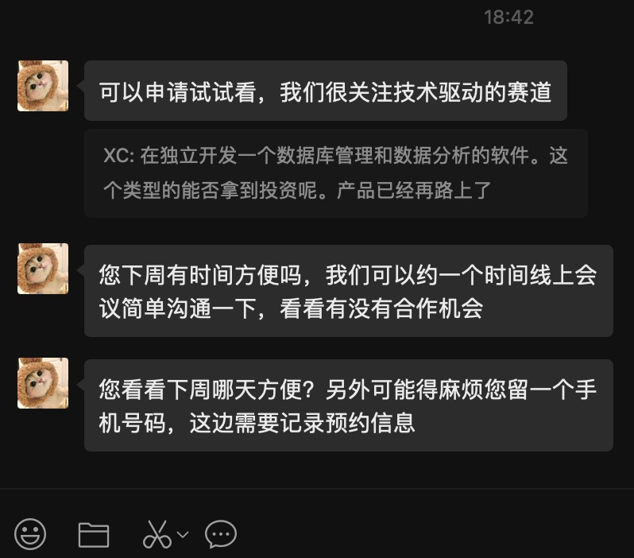

奶昔🥤
@realNyarime
@xiongchun007 @datacollie 恭喜！致敬每个创业的人😃

程序员老熊
@xiongchun007
🎉 @DataCollie 成功斩获 300 万元天使轮融资！
创始人老熊终于可以放下卖身当牛马的生活，专注全职开发，再也不用每天骑着小电驴去厂里挣生活费了。
这笔资金将极大加速 #DataCollie 的开发与发布节奏，让这款为全球开发者和数据分析师打造的跨平台数据工具软件早日从“黑屋”走向世界。#buildinpublic https://t.co/3CP7OQk5aw